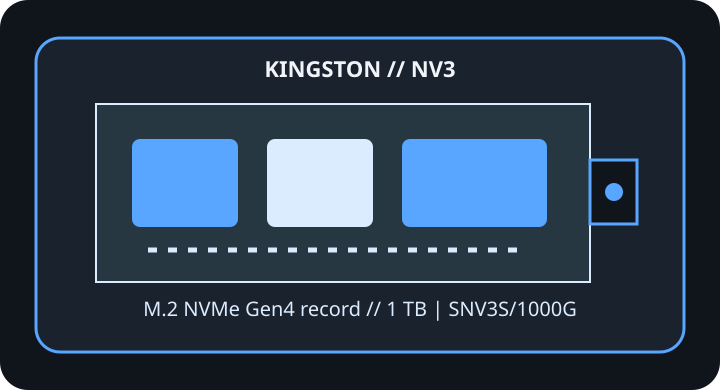

[ IDENTIFIED PRODUCT // PCIE 4.0 NVME ]
Kingston NV3 1 TB
1 TB M.2 2280 SSD identified by the complete manufacturer part number below. Capacity, heatsink, interface mode and regional suffix can change specifications; do not transfer ratings from a neighboring SKU.

SKU IDENTIFICATION: Kingston NV3, 1 TB, part number SNV3S/1000G. Verify the complete label, hardware revision and firmware before installation.
Manufacturer-identified specifications
| Product / exact MPN | Kingston NV3 1 TB (SNV3S/1000G) |
|---|---|
| Capacity / form factor | 1 TB; M.2 2280. |
| Interface / host lanes | PCIe 4.0 x4; NVMe 1.4. Published maxima require the compatible host generation and lane configuration; an older or lane-shared host can negotiate lower throughput. |
| Controller | Not identified by Kingston in the cited product specifications; component revisions may vary. |
| NAND | Kingston specifies 3D NAND; cell type and NAND supplier are not stated in the cited product references. |
| Sequential performance | Up to 6,000 MB/s sequential read and 4,000 MB/s sequential write. Vendor-rated figures apply under manufacturer test conditions, not as guaranteed sustained real-world results. |
| Endurance / warranty | 320 TBW; limited five-year warranty or TBW limit, whichever comes first. |
| Thermal package | Operating temperature: 0–70 °C (Kingston datasheet). Use a compatible host heatsink and avoid blocking airflow. |
Firmware, host compatibility & thermal cautions
- Use Kingston SSD Manager and Kingston’s model-specific support channel to check firmware availability; confirm the full drive label before applying any update.
- Requires an M.2 M-key NVMe socket of 2280 length. PCIe 3.0 hosts can negotiate a lower link rate; check BIOS/UEFI boot and shared-lane restrictions.
- Check M.2 keying, slot length, single-/double-sided clearance, lane sharing, and system BIOS/UEFI support in the exact host manual; M.2 shape alone does not prove NVMe or boot compatibility.
- Follow the drive and host maker’s heatsink and thermal-pad instructions. Keep airflow around the controller area, do not stack thermal materials or remove factory labels/cooling without explicit guidance, and expect sustained performance to vary with temperature and workload.
- Shut down and remove standby power as instructed before installation; use ESD precautions. Back up data and retain recovery media and encryption keys before changing storage or updating firmware.
Manufacturer product, specification & service references
- Kingston NV3 — product and capacity specificationsManufacturer source for product identity and the product-specific specifications referenced above.
- Kingston NV3 — manufacturer datasheetSecond manufacturer source for technical documentation, product support or model features.
Ratings are included only where published by the manufacturer in the linked product references; undisclosed controller/NAND details and capacity-specific values are not inferred. Firmware availability and revisions can change; verify against the physical model and host before service.